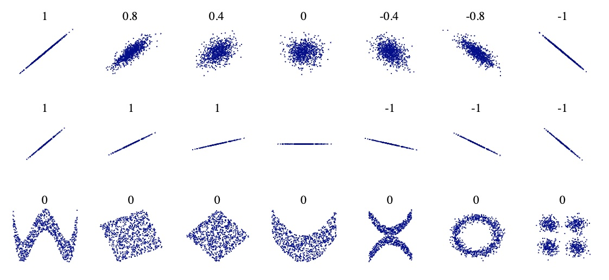
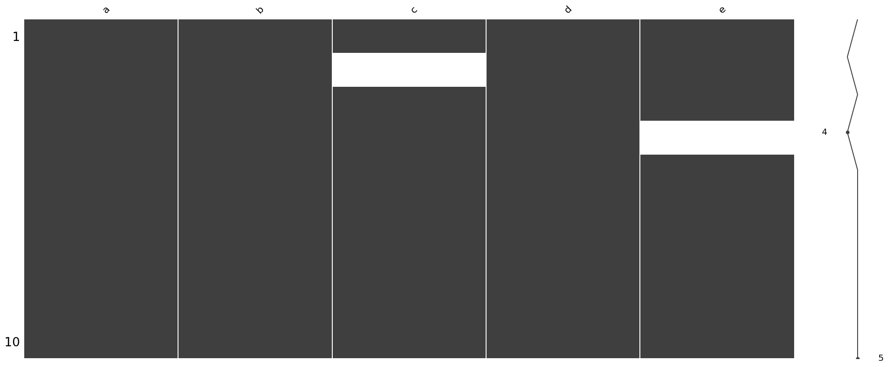
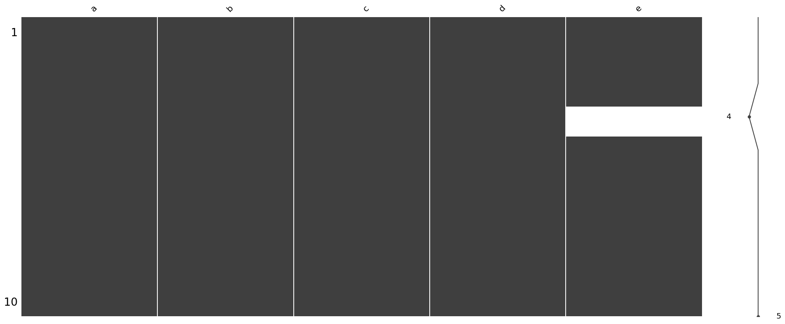
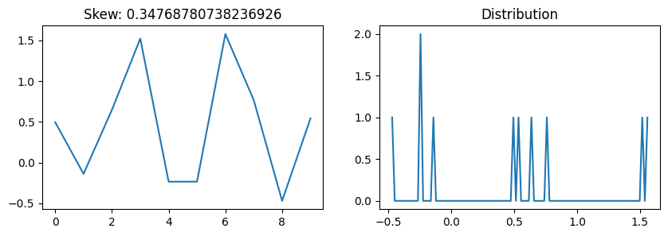
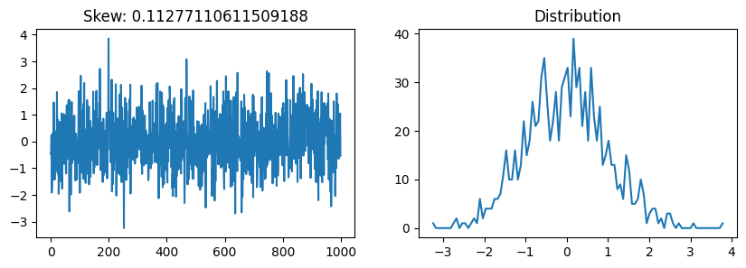
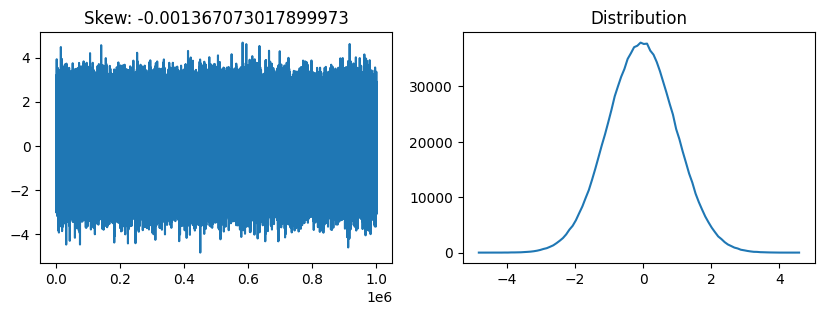
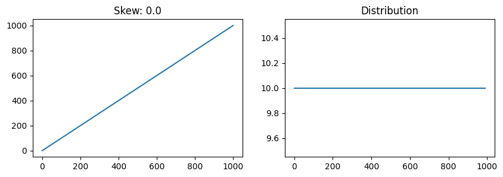
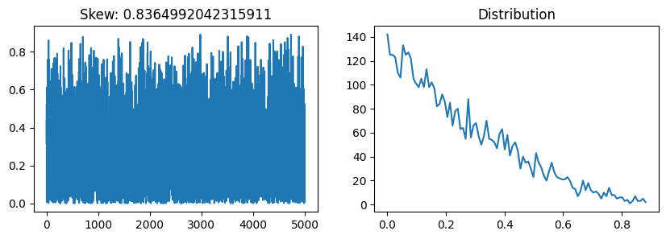
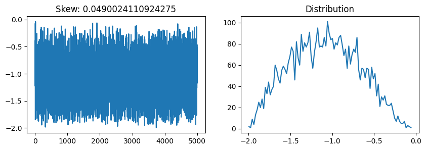

import matplotlib.pyplot as pltStatistics
Correlation
Paerson coefficient between columns is a way of measuring a linear correlation. It is a number between –1 and 1 that measures the strength and direction of the relationship between two variables: \(\rho_{X,Y} = \frac{cov(X,Y)}{\sigma_X \sigma_Y} = \frac{(X,Y)}{\sigma_X \sigma_Y}\)

Label Encoder
LabelEncoder can be used to normalize labels.
>>> from sklearn import preprocessing
>>> le = preprocessing.LabelEncoder()
>>> le.fit([1, 2, 2, 6])
LabelEncoder()
>>> le.classes_
array([1, 2, 6])
>>> le.transform([1, 1, 2, 6])
array([0, 0, 1, 2]...)
>>> le.inverse_transform([0, 0, 1, 2])
array([1, 1, 2, 6])Convert type
df[column].apply(str) df[column].apply(float)
Describe
import pandas as pd
import numpy as np
df = pd.DataFrame(np.random.randn(10, 5), columns=['a', 'b', 'c', 'd', 'e'])
df.describe()| a | b | c | d | e | |
|---|---|---|---|---|---|
| count | 10.000000 | 10.000000 | 10.000000 | 10.000000 | 10.000000 |
| mean | 0.426285 | 0.585122 | -0.176158 | 0.060639 | -0.362984 |
| std | 1.057365 | 1.221160 | 1.015207 | 1.199665 | 1.178528 |
| min | -0.995421 | -0.859328 | -1.637495 | -1.511699 | -1.519060 |
| 25% | -0.217827 | -0.653228 | -0.858613 | -0.572152 | -0.937348 |
| 50% | 0.277748 | 0.764875 | -0.043677 | -0.241223 | -0.733161 |
| 75% | 0.697302 | 1.373044 | 0.206896 | 0.325958 | -0.234405 |
| max | 2.446587 | 2.387042 | 1.694069 | 2.220635 | 2.704051 |
Missing values visualization
df.iloc[1,2] = np.nan
df.iloc[3,4] = np.nanimport missingno as msno
msno.matrix(df)
df['c'].fillna(0, inplace=True)msno.matrix(df)
Counter
df.dtypesa float64
b float64
c float64
d float64
e float64
dtype: objectdf.a = df.a.apply(str)df.dtypesa object
b float64
c float64
d float64
e float64
dtype: objectfrom collections import Counter
Counter(df.dtypes)Counter({dtype('O'): 1, dtype('float64'): 4})Skew
from scipy.stats import skewdef plot_skew(array):
fig, axs = plt.subplots(1,2, figsize=(10,3))
axs[0].plot(array)
values, ranges = np.histogram(array, 100)
axs[1].plot(ranges[:-1], values)
axs[0].set_title(f'Skew: {skew(array)}')
axs[1].set_title('Distribution')
plt.show()np.random.seed(42)
plot_skew(np.random.randn(10))
plot_skew(np.random.randn(1000))
plot_skew(np.random.randn(1000000))
plot_skew(np.arange(1000))



Box-Cox transformation
from scipy.special import boxcox1p
from scipy.special import boxcoxBox-Cox transformation is a way to transform non-normal dependent variables into a normal shape.
a = np.random.beta(1, 3, 5000)plot_skew(a)
plot_skew(boxcox(a, 0.5))

One-hot encoding
s = pd.Series(list('abca'))
s0 a
1 b
2 c
3 a
dtype: objectpd.get_dummies(s)| a | b | c | |
|---|---|---|---|
| 0 | 1 | 0 | 0 |
| 1 | 0 | 1 | 0 |
| 2 | 0 | 0 | 1 |
| 3 | 1 | 0 | 0 |
Exponential
Calculate exp(x) - 1 for all elements in the array: np.expm1